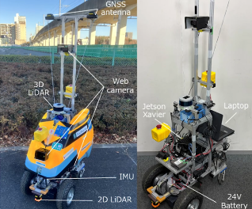
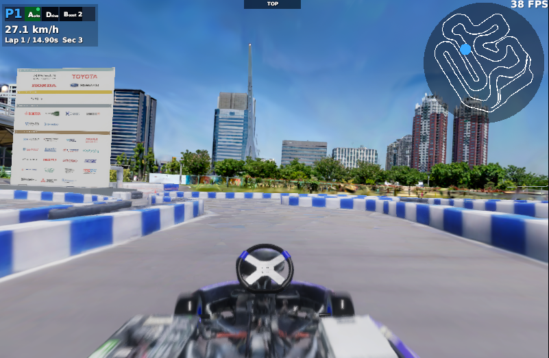

START ─── WP01 ─── WP02 ─── GOAL Ryo Yasumoto 自律移動ロボットの研究・開発 現在は、つくばチャレンジ2026に向けたロボットの開発をしている。 研究を見る GitHub AFFILIATION芝浦工業大学 工学部 電気ロボット工学コース LABORATORYフィールドロボット研究室 ADVISORS長谷川忠大 / 谷島諒丞 研究プロジェクト  PR01 つくばチャレンジ2026 3D LiDAR / 2D LiDAR / IMU / Odometry  PR02 自動運転AIチャレンジ2027 自動運転 / レーシングカート